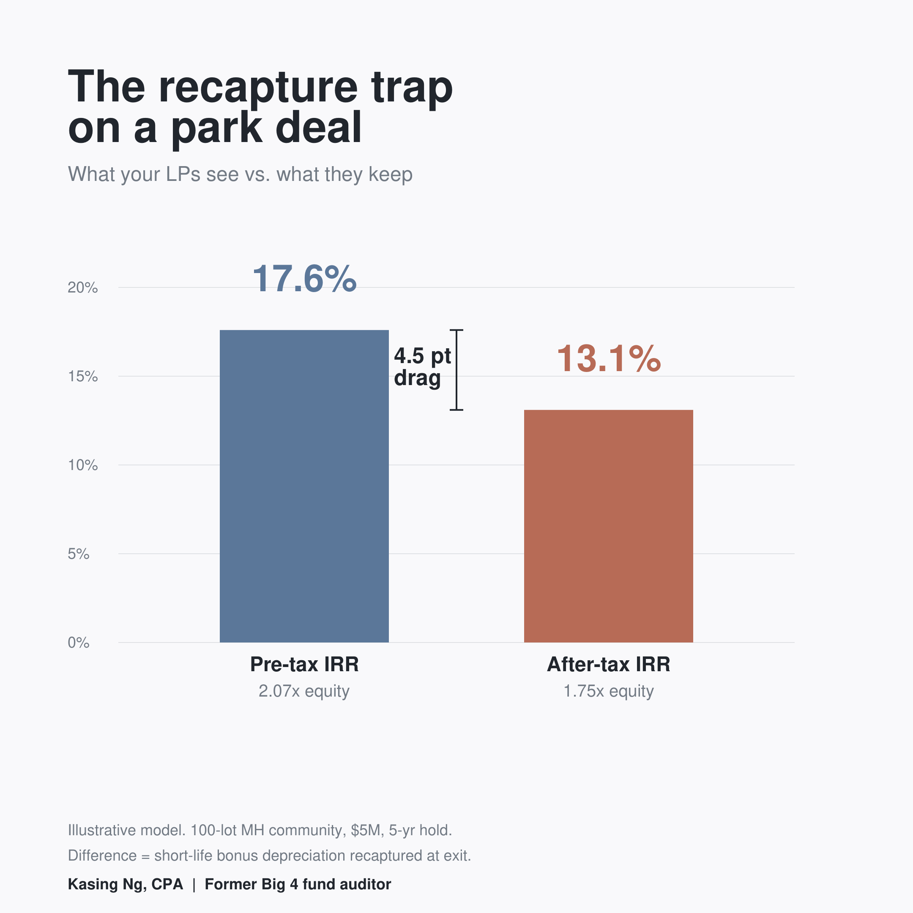

Due diligence catches errors. It does not catch omissions.
Every serious buyer rebuilds the offering memorandum. You set aside the broker's pro forma and work from the T-12, the rent roll, the tax bills, the leases. You correct the rent growth, normalize the expenses, harden the exit cap. By the time the LOI goes out, little of the OM's math is left standing.
That work is where one gap can hide, and it hides because the process is doing its job.
The distinction is between errors and omissions. Re-underwriting corrects the OM's errors: numbers that are on the page and wrong. Rent growth set too high. An expense ratio too thin. A cap rate too generous. Those are catchable, because they exist to be checked against something better.
The after-tax LP return is not an error in the OM. It is an omission. The document was never going to carry an after-tax figure, so there is nothing there to catch and correct. And because the rebuild starts from that same document, it tends to inherit the same edge. It stops at the pre-tax IRR, because that was the boundary of the thing being fixed. A dimension that was never on the page does not get re-underwritten.
On a park deal, that omission is not small, and the reason runs against intuition.
The value-add story that makes the deal work is the same mechanism that loads the tax at exit. You reposition, elect bonus depreciation on a cost-segregation study, and a large share of basis moves into short-life personal property and 15-year land improvements. That shelter is real, and it is one of the better features of the asset class. But it is recaptured at sale, and the recapture is not a single rate. The 5- and 7-year personal property, §1245, comes back in full at ordinary rates. The building shell that stayed on a straight-line schedule is unrecaptured §1250 gain, capped at 25 percent. The 15-year land improvements sit in between: because they are depreciated on an accelerated method, a meaningful part of that depreciation recaptures at ordinary rates as well. Cost segregation moves basis out of the 25 percent bucket and toward the ordinary one. That is the point of it going in, and the cost of it coming out. The more the reposition works, the more basis sits where recapture is heaviest, so the same lever drives both the appeal of the deal and the size of the exit drag.
Here is the shape of it on an illustrative deal. A 100-lot manufactured-housing community, $5M, five-year hold, financed and grown the way these usually are. The pre-tax LP IRR comes out near 17.6 percent. Model the exit with the short-life recapture taxed at ordinary rates, and the after-tax LP IRR is about 13.1 percent. A little over four points, and none of it was an error anyone could have caught in the OM.

One assumption sits under that number, and it belongs in the open. The after-tax figure here is modeled for a high-bracket taxable US individual LP. A tax-exempt investor or a foreign LP sits differently, and a fund with a mix of the two lands somewhere in between. That is not a reason to leave the number out. It is the reason it belongs inside the model, where the LP base can be set to the deal, rather than assumed away.
There is a second-order effect worth a look. The waterfall runs on pre-tax distributions, so the after-tax gap does not change the mechanical split. It changes what the split means. If the LP clears an 8 percent pref on a pre-tax basis but nets closer to 6 after recapture, the promote is being earned on a return the LP is partly handing to the IRS. That is not an argument against the promote. It is a reason to see the after-tax LP number before the hurdle is set or agreed to.
None of this argues against cost segregation or against the reposition. Both are the right moves. The point is narrower: the model needs one dimension past the document it started from. Once the after-tax exit is on the page, it stops being a surprise and becomes something to plan. A §1031 exchange defers it. A cash-out refinance takes cash without triggering it. Timing, and an individual LP's tax position, move the number. You just cannot plan around a liability that sits outside the model.
The fix is not more diligence on the OM. You have already done that, and it was never going to surface this. It is extending your own model one step past the boundary the OM set for it.
Before the next raise, one question for whoever builds the model: does the LP return in the deck carry the exit recapture, or does it stop at the pre-tax IRR, where the OM stopped? The answer tells you whether your investors are looking at the return they will keep.
That is the read I do. I am a CPA and a former Big 4 fund auditor. I do not file returns. I model the after-tax LP outcome at underwriting, so the number your investors see is closer to the one they keep. The reason it fits on one page is that the model does the work underneath it, holding the pre-tax return, the after-tax return, and the recapture split in one pass so they stay consistent from deal to deal. I built that engine, and it is free to use at credevsim.com.
If it helps, I can share an anonymized sample that puts the pre-tax return next to the after-tax return with the recapture in it. Just reach out and I will send it over.
Want the after-tax read on your own park deal? I run the same pre-tax vs. after-tax read on your actual deal, so you can see whether the recapture changes the story before your LPs do. The modeling tool itself is free. See how it works →